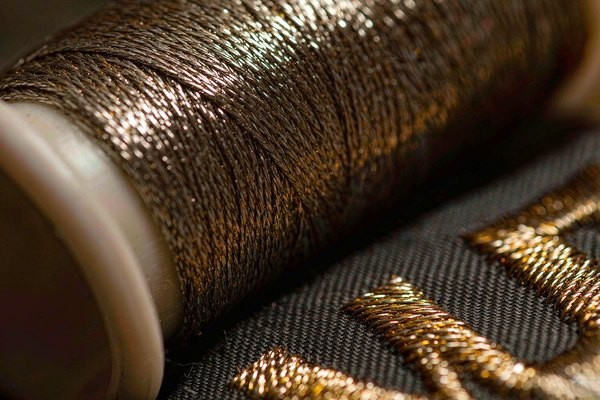
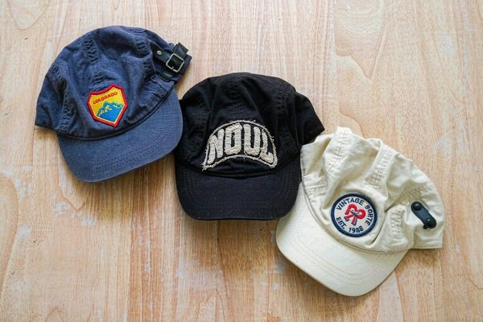
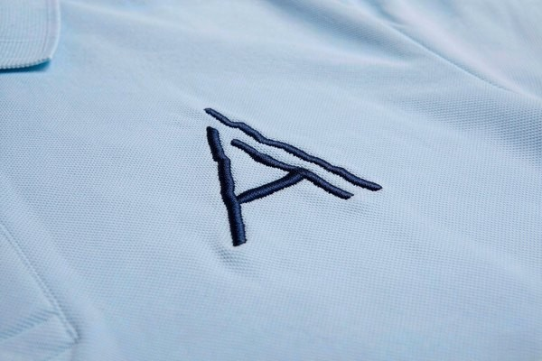
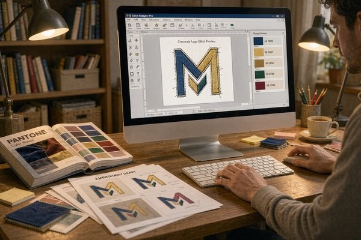
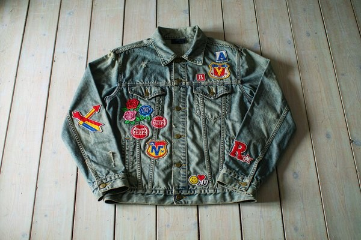
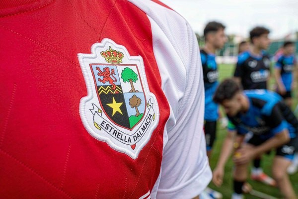

Dense thread work
Full-fill stitching with clean satin outlines and no visible gaps between colour blocks.
Thread-stitched emblems built from your artwork on twill, with raised satin detail, a choice of merrowed or cut edges, and colours that hold up on uniforms, hats, jackets and bags. Digitizing, proof and revisions are on us.

An embroidered patch is not printed and not moulded. Coloured thread is stitched into a woven base, one embroidery stitch at a time, so the finished surface has real depth you can feel with a thumb.
Satin stitches catch light differently from fill stitches. Logos get a raised, tactile finish that flat printing cannot copy, which is why clubs and uniform programs keep coming back to thread.
The standard base is polyester twill, a tight diagonal weave that resists tearing and holds dense stitching without puckering.
Colourfast rayon and polyester thread shrug off repeated laundering, sweat and dry cleaning. A sewn-on patch normally outlives the garment it sits on.
Rectangles, shields, circles or a custom outline traced straight from your logo. Merrowed, hot-cut and laser-cut edges each handle a different kind of shape.
If you want the longer version, our complete custom embroidered patches guide walks through construction, pricing logic and design decisions step by step.
Most suppliers show you a starting price and go quiet about what moves it. Pick your options and we will show the specification, a relative cost indicator, and an honest production note before you even ask for a quote.
This is not a price. It shows how your choices push unit cost up or down against a 2 inch, 75% coverage, 4–6 colour, merrowed, twill, sew-on patch in a 50–199 piece run. Exact quotes depend on your stitch file.
Close-ups of the details that decide whether a patch looks cheap or considered: stitch density, edge finish, thread sheen and how a logo sits on real fabric.
Full-fill stitching with clean satin outlines and no visible gaps between colour blocks.

Foam under the stitches lifts lettering into a rounded, sculpted profile.
The classic raised overlock edge that seals a standard shape against fraying.

A subtle shine for crest details, awards and premium fashion applications.

Shaped to sit flat on a curved crown without buckling at the edges.

Brand-matched thread shades on a workwear polo, colourfast after washing.
Coverage is the share of the patch face covered in thread. It changes the look, the weight, the stitch count and the price. Most orders land at 75%, but that is a starting point, not a rule.
The twill base stays visible between stitched shapes. The patch is lighter, flatter and quicker to run, which suits bold lettering, name tapes and simple logos where the fabric is part of the design.
Dense enough to read as fully embroidered, with enough base left showing to add depth behind the design. This is the default for uniforms, apparel, club patches and most branded merchandise.
Nearly every square millimetre is stitched. The patch feels thicker and more dimensional, and detailed crests, military insignia and collectibles get the solid face they need.
Swipe the table sideways to see all columns.
| If your artwork is… | Choose | Why |
|---|---|---|
| Bold text on a plain background | 50% | The open twill gives lettering contrast and keeps the run cheap. |
| A logo with 3–6 flat colours | 75% | Enough stitching to look finished without paying for hidden thread. |
| A detailed crest or mascot | 100% | Every element needs a stitch; exposed twill would look like a gap. |
| Going on a curved cap crown | 50–75% | Less thread means less stiffness, so the patch sits flatter. |
| Getting 3D puff treatment | 100% | Foam needs a dense stitched bed to hold its raised shape. |
The edge is the first thing that fails on a cheap patch. It also decides which shapes are even possible. A merrowed edge needs a smooth, simple outline; an intricate silhouette needs a cut edge instead.
Swipe the table sideways to see all columns.
| Border | How it is made | Best for | Watch out for |
|---|---|---|---|
| Merrowed | A raised overlock stitch wraps the whole perimeter in thick thread. | Circles, rectangles, shields, classic uniform and biker patches. | Needs about 3 mm of plain margin. Tight corners and fine notches will not wrap cleanly. |
| Hot cut / heat sealed | A heated blade cuts and seals the fabric edge in one pass, then a thin stitch finishes it. | Custom silhouettes, squared-off shapes, patches that will be sewn flush. | Edge is flatter and less decorative than merrowed. |
| Laser cut | A laser traces the outline straight from the digitized shape. | Complex logos, letters, fine points and small production runs. | Slight colour darkening on light fabrics at the cut line. |
| Embroidered border | A satin-stitch frame is sewn as part of the design rather than wrapped afterwards. | Crests, badges, premium retail patches. | Adds stitch count and needs a wider clear margin. |
| Frayed edge | The fabric edge is left deliberately raw for a worn-in look. | Fashion, denim and vintage styling. | Not suitable for uniforms or items that are laundered hard. |
Our border options guide has close-up photographs of each finish and a decision checklist for shaped patches.
Two material decisions sit under every embroidered patch: what the thread is made of, and what it is stitched into. Both change the finish, the durability and the environments the patch survives.
Rayon gives the classic high sheen and the widest shade card. Polyester is more colourfast under UV, chlorine and industrial washing, so it wins for workwear and outdoor kit. Metallic adds a reflective glint to crests and awards. Neon pops on event merchandise. Glow-in-the-dark thread is available at 10%, 25% or 50% of the stitch area.
We map your Pantone references to the nearest stock thread shade and print the callouts on the proof. Thread is dyed in lots, so an exact match is an approximation, not a printed ink value.
Polyester twill is the default: tight weave, stable under dense stitching, available in dozens of colours. Felt gives a softer, matte vintage look for letterman jackets. Ballistic nylon and camouflage bases suit tactical gear. Reflective fabric adds night visibility for safety and cycling programs.
Specialty bases are stiffer and can resist iron-on adhesive. If you plan to heat press, tell us the base up front so we can recommend a sewn or hook-and-loop attachment instead.
The thread types guide compares sheen, wash fastness and cost across all five options with sample photography.
Everyone advertises free artwork. Very few explain what happens to your logo between upload and production. Digitizing is not a file conversion. A digitizer rebuilds the artwork as machine instructions, and that rebuild is where most quality problems are born or prevented.

A cheap auto-traced file skips most of this. The result is wobbly letters, gaps between colour blocks and a patch that curls at the edges. Our digitizing is done in-house, included in the quote, and revised until the proof looks right.
The same product gets searched under a dozen names. Here is how the trade actually uses them, so you can tell a supplier exactly what you want and not get quoted for the wrong thing.
Size is measured on the longest side. Bigger is not automatically better: stitch detail has a floor, and a patch that is too large for a curved cap crown will buckle at the corners.
Common sizes shown to scale. Custom dimensions between these marks are welcome.
Hat fronts, name tapes, small sleeve tags. Keep lettering above 6 mm or it will close up.
The workhorse range for chest logos, polo shirts and club badges.
Jacket backs, biker rockers and team identity patches. Consider a sew-on backing for the weight.
Full-back statement pieces. Plan the border carefully, as large merrowed edges can ripple.
The embroidery can be perfect and the patch still fall off, because the backing was wrong for the fabric. Match the attachment to how the item is used and washed, not to whichever option is cheapest.
Swipe the table sideways to see all columns.
| Backing | How it attaches | Best for | Avoid when |
|---|---|---|---|
| Sew-on (plain back) | Stitched through the garment edge by hand or machine. | Uniforms, workwear, denim, anything laundered often. | You need to swap designs between garments. |
| Iron-on / heat seal | Heat-activated glue bonds under a press or household iron. | Cotton tees, hoodies, hats, DIY retail packs. | Waterproof coatings, nylon, leather, fleece, silk. |
| Hook and loop | Hook side on the patch mates with a sewn loop panel. | Tactical gear, morale patches, rotating call signs. | The garment has no loop panel and cannot be sewn. |
| Peel-and-stick adhesive | Pressure-sensitive liner, no heat needed. | Laptops, notebooks, packaging, short-term events. | Anything washable or exposed to heat and sunlight. |
| Magnetic | Embedded magnet through a thin fabric layer. | Vehicle doors, display boards, temporary signage. | Clothing, or near pacemakers and electronics. |
| Plastic stiffener | A rigid insert is sealed into the back. | Large back patches that must stay flat. | Soft draping fabrics or curved cap crowns. |
| Pin / button loop | Mechanical fastener added to the back. | Awards, lapel badges, collectible patches. | Heavy items or children's clothing. |
| No backing | Raw reverse, ready for your own application. | Costume makers, upholstery, further fabrication. | The end user expects a ready-to-apply patch. |
Iron-on failures are almost always a temperature, time or pressure problem, not a glue problem. These are the numbers we give customers, and the fabrics we warn them about.
Pre-press the garment for a few seconds to drive out moisture. Position the patch, cover it with a thin cloth or parchment, then press with firm, even pressure for 15 to 20 seconds at 150–170°C. Let it cool completely before flexing the fabric, then turn the garment inside out and press the reverse for another 10 seconds. A household iron works on small patches if you use the cotton setting and lean on it, but a heat press gives even pressure across larger shapes.
Skip heat entirely on waterproof nylon, leather, fleece, silk and anything with a coating. A sewn edge is the reliable answer there.
Wait 24 hours after pressing, then wash inside out on a cool or warm cycle. Avoid bleach and high-heat tumble drying, which soften adhesives and can dull metallic thread. Sew-on and hook-and-loop patches have no glue to fail, so they tolerate industrial laundry far better. If a corner starts to lift, a few stitches along the edge will save the patch; re-pressing an old adhesive rarely holds.
Thread itself is colourfast. What usually degrades first is the backing, not the embroidery.
The numbers buyers ask for before they request a quote. Anything outside this table is usually possible, it just needs a conversation first.
Swipe the table sideways to see all columns.
| Parameter | Standard range | Notes |
|---|---|---|
| Finished size | 0.5 to 12 inches on the longest side | Custom dimensions and die-cut silhouettes welcome. |
| Embroidery coverage | 50%, 75% or 100% | Drives stitch count, weight and unit cost. |
| Thread colours | Up to 12 per design | More available on request; mapped to Pantone references. |
| Thread | Rayon, polyester, metallic, neon, glow | Polyester recommended for UV exposure and industrial laundry. |
| Base fabric | Polyester twill, felt, ballistic nylon, camo, reflective | Twill is the default and the most stable under dense stitching. |
| Border | Merrowed, hot cut, laser cut, embroidered, frayed | Complex silhouettes need a cut edge, not a merrow wrap. |
| Backing | Sew-on, iron-on, hook and loop, adhesive, magnetic, none | Choose by garment fabric and wash cycle. |
| Minimum letter height | 6 mm (about 0.25 inch) | Smaller text closes up; our legibility guide explains why. |
| Minimum line width | 1 mm | Thinner lines need to be converted to a running stitch. |
| Minimum order | None | Single samples and full production runs use the same process. |
| Digital proof | Free, within 12 hours | Unlimited revisions until you approve. |
| Production | About 10–14 business days after approval | Rush slots available on most orders; shipping via DHL or FedEx. |
Thread has a physical width. Artwork that looks crisp on a screen can turn to mush when a needle has to draw it. Run through this checklist and your first proof will be close to the final patch.
Small type is the most common surprise. The patch text legibility guide shows real stitched samples at different type sizes.
Uniform programs, children's products and retail buyers often need paperwork alongside the patches. Here is what we can actually put in front of an auditor, and what we will not claim without evidence.
We can confirm the composition of the thread, twill and backing used on your specific order, and issue a material declaration against that batch. If your program needs REACH, RoHS or CPSIA documentation, tell us at quote stage so the right lot and test route are used from the start.
Where a buyer requires laboratory testing, we can arrange pre-production samples for an accredited third-party lab and share the resulting report. We do not invent certificate numbers, and we do not claim a certification we cannot produce a document for.
Every run is tied to an approved proof, a thread shade list and an inspection record. That gives procurement teams something concrete to file, which matters more than a badge on a website.
Ask for the documentation you need in the quote request. We will tell you plainly which items we can supply for your order and which need an outside lab.
Four steps, no minimum, and no charge for the back-and-forth before you approve anything.
Upload a logo or sketch and tell us size, quantity, coverage, border and backing. Rough notes are fine; we will fill the gaps.
We rebuild the design as a stitch file and send a free digital proof within 12 hours, with thread callouts and dimensions.
Ask for as many changes as you like. Nothing goes to the machines until the proof has your sign-off.
Embroidery, cutting, backing and inspection happen in-house, then the run ships worldwide via DHL or FedEx.
Production time starts after proof approval, not from the first email. Knowing that distinction saves a lot of last-minute panic.
Stitch file built, thread shades mapped, dimensions and backing shown for your review.
Unlimited proof changes. Approve only when the layout, colours and size are right.
Embroidery, edge finishing, backing application and a piece-by-piece inspection. Rush slots on most orders.
DHL or FedEx with tracking. Bulk shipments can be packed by size, design or destination.
You will not find an "as low as" price on this page. A 1 inch 50% name tape and a 5 inch 100% 3D puff back patch are two different products, and a headline number for one tells you nothing about the other.
Digitizing and setup are included in the quote, so there is no separate tape charge to discover later. The bigger the run, the smaller that fixed cost becomes per piece.
A sample run of 1–49 pieces carries the full setup on a handful of units, so the per-piece figure looks high. At 50–199 pieces the setup starts to spread. At 200–999 and above 1,000 pieces we can schedule a dedicated machine slot, buy thread against one lot for colour consistency, and pack by design or destination.
Send the same specification to quote at two quantities and we will show both figures side by side. That comparison is usually more useful than a price list.
The right specification changes with the job. Here is how buyers in six common situations normally spec their patches.
75% coverage, polyester thread for industrial laundry, sew-on backing, Pantone-matched brand shades.
Quote a uniform run →2 to 3 inches, 50–75% coverage so the patch stays flexible on a curved crown, often 3D puff.
Quote a hat patch →
Larger 4 to 8 inch shapes, merrowed or frayed edges, iron-on for retail packs or sew-on for permanence.
Quote a jacket patch →
Hook-and-loop for interchangeable morale patches, or sew-on for school and corporate bags.
Quote a bag patch →
Shield or crest shapes, 100% coverage, metallic accents, matched to the club palette.
Quote a team crest →
Short runs, dated designs, glow or neon thread, packed per attendee if needed.
Quote an event patch →Sometimes the honest answer is that embroidery is not the right process. This is how the four common constructions compare, so you can pick on the merits rather than on habit.
Swipe the table sideways to see all columns.
| Construction | Look and feel | Detail ceiling | Best for |
|---|---|---|---|
| Embroidered | Raised thread, visible stitch texture, classic badge feel. | Medium. Small text needs 6 mm, fine gradients become colour blocks. | Uniforms, clubs, hats, jackets, heritage branding. |
| Woven | Flat, smooth, thread woven as fabric rather than stitched on top. | High. Fine lines and small lettering stay crisp. | Detailed logos, photo-like artwork, thin labels. |
| PVC / rubber | Moulded 2D or 3D rubber, waterproof, wipe clean. | High for sharp shapes, no thread texture. | Outdoor gear, tactical kit, marine, harsh environments. |
| Chenille | Fuzzy looped yarn, soft and thick, varsity look. | Low. Bold letters and simple shapes only. | Letterman jackets, varsity letters, fashion. |
Still torn between thread and weave? Our woven vs embroidered comparison puts both under a macro lens. We make all four constructions in the same factory, so the recommendation is not tied to what we happen to sell.
Plenty of patch sites lead with a 4.9 score and thousands of reviews. We would rather put something verifiable in your hands.
We do not publish star ratings or customer testimonials until we have verifiable, consented feedback behind them. So before you commit, ask us for a free digital proof within 12 hours, a physical pre-production sample, and a written specification for your exact size, thread shades, coverage and backing. For larger programs we can also put you in touch with a reference job of a similar type.
Every patch is made to order against an approved proof, so the run you receive matches the sample you signed off. That is a stronger guarantee than a number on a badge.
The eight things buyers ask us most, answered without the sales patter.
Custom embroidered patches start as a base fabric, usually polyester twill. Your artwork is digitized into a stitch file that tells an industrial embroidery machine where to place every satin and fill stitch, in which thread colour and in what order. The stitched fabric is then cut to shape, finished with a merrowed, hot-cut or laser-cut edge, and fitted with the backing you choose. Because the design is built from thread rather than printed ink, the surface has real texture and holds up to washing and abrasion.
Coverage is the share of the patch surface stitched over with thread. At 50% the twill base stays visible between design elements, giving a lighter patch that suits bold text and simple logos. At 75% most of the surface is stitched while a little base still shows, which is the most common choice for uniforms and apparel. At 100% the entire face is covered in thread for a dense, premium feel. Higher coverage means more stitches, longer machine time and a higher unit cost.
We are a China-based custom patch manufacturer with our own digitizing, thread matching, embroidery, cutting and inspection lines, not a trading intermediary. You work directly with the production team, which is why we can offer factory direct pricing, free digital proofs and no minimum order quantity. We ship worldwide via DHL and FedEx.
Digitizing converts your logo into a machine-readable stitch file: stitch types, direction, density, underlay, colour sequence and pull compensation are all set by a digitizer. It is the single biggest factor in how clean the finished patch looks. Our quote includes digitizing and unlimited proof revisions, so there is no separate setup or tape charge. Send a vector file where possible; we can also redraw low-resolution artwork.
Up to 12 thread colours per design as standard, with more available on request. We map Pantone references to the closest available rayon or polyester thread shade and show every colour callout on your digital proof before production. Metallic, neon and glow-in-the-dark threads are available as upgrades. Thread is dyed in lots, so an exact Pantone match is an approximation rather than a printed colour.
The stitched patch itself is machine washable and colourfast, but the backing decides how it behaves on the garment. Sew-on is the most durable and survives repeated laundering. Iron-on and heat-seal backings hold on cotton and polyester blends when pressed at the right temperature, time and pressure, but they can lift on waterproof coatings, nylon, leather and heavily textured fabrics. Always wash inside out and avoid high-heat tumble drying on adhesive backings.
There is no minimum order quantity. You can order a single sample patch, a short run for a team, or a full production batch. We send a free digital proof within 12 hours of receiving your artwork and requirements, and revisions are unlimited until you approve it. Standard production runs about 10 to 14 business days after proof approval, with rush slots available on most orders.
Wholesale pricing depends on finished size, stitch count driven by coverage, number of thread colours, border and cut method, base fabric, backing, any specialty thread or 3D puff upgrade, and total quantity. Larger runs spread the one-off digitizing and setup across more units, so the per-piece price drops as quantity rises. We quote per order rather than publishing an as-low-as price, because a 1 inch 50% name tape and a 5 inch 100% 3D puff back patch are genuinely different products. Send your design, dimensions and quantity for an exact figure.
Send your logo, size, quantity and backing. We will reply within 12 hours with a free digitized proof and an exact factory direct quote. No minimum order, no setup fee, no obligation.
Get Free Quote